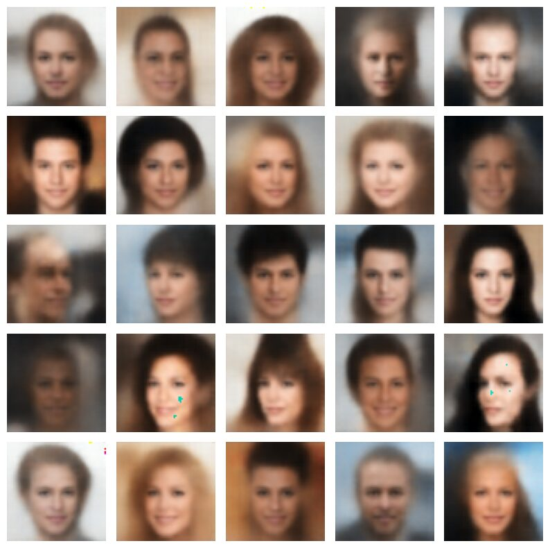
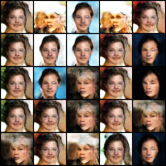
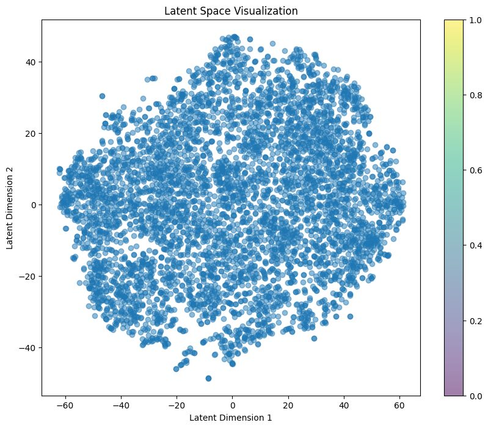

Statistics capstone: generating realistic faces
VAE, GAN, hybrid training

VAE generated samples, 12 epochs

GAN generated samples, 500 epochs

VAE+GAN hybrid generated samples, 100 epochs

Visualization of latent space, clear clusters could be observed
Project summary
Recent advancements in generative models have significantly transformed the land- scape of artificial intelligence, particularly in image synthesis and representation learning. The rapid advancement of computing power has brought image processing to the forefront by being applied to various fields, there is a growing demand for artificial faces driven by privacy concerns. This project investigates how to generate novel artificial faces from established face datasets by applying three different generative model architectures: Vari- ational Autoencoder (VAE), Generative Adversarial Network (GAN), and a hybrid model that integrates both frameworks. The performance and effectiveness of these models are thoroughly compared to evaluate their capabilities in face generation. Some interpreta- tions and further facial interpolations are also discussed.